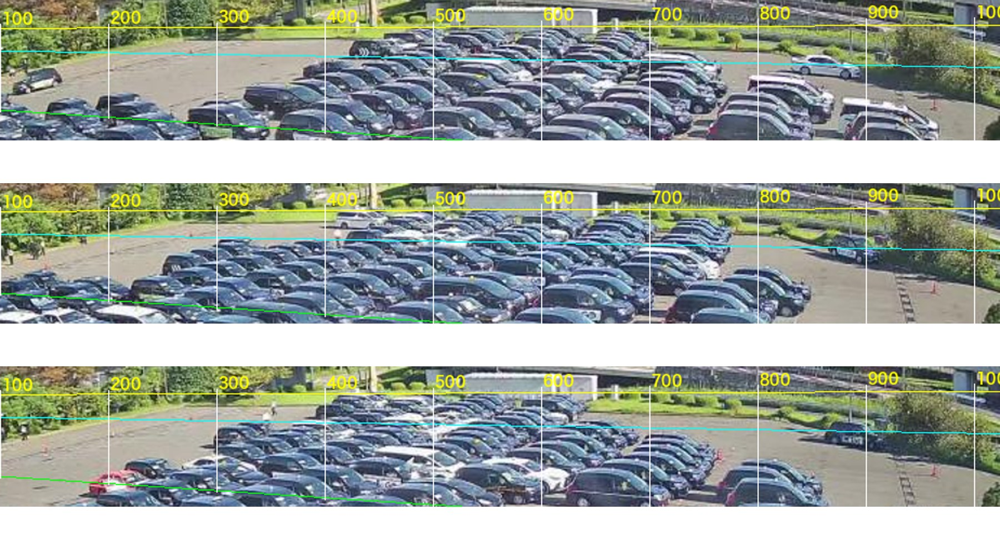
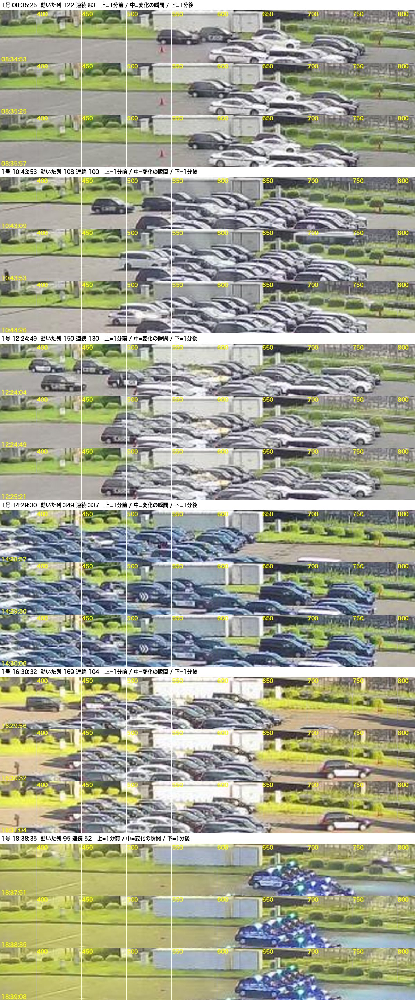

1号の列移動をどう測るか（カメラは今のまま・2026-09-18）
前提：1号のカメラ（Real001, 768×384）は変えられない。1号は画面のいちばん奥、帯の高さ 29px、車1台 19px。今夜試した3案の結果と、残りの案を並べる。
0. 何が難しいか（絵で）

黄＝1号の上端、水色＝1号/2号の境、緑＝2号/3号の境。1号は黄と水色の間の 細い一段（8列が奥行きに重なって1本の帯に見える）。右端（出口側 x≈700〜780）の先は出口道路と生け垣、左端は影と植え込み。
- 列移動＝帯全体が右へ19px ずれる。黒い車が並ぶと、ずれても絵がほぼ同じ。
- 端（頭・尾）の位置は、明るさでもエッジでも生け垣・影・道路の車と混ざって安定して取れない（今夜2方式で失敗）。
1. 今夜試した3案
| 案 | やり方 | 結果（9/17） |
|---|---|---|
| A 帯の変化の広さ（今の方式、しきい値緩和） | 1本の明るさプロファイルの前後差が帯の何割か | 17→27回/日。9〜12時・17〜18時は依然0（小さなずれを拾えない） |
| B 端の位置を追う（4号式） | 明るさで占有→頭（右端）/尾（左端）の位置→跳びを数える | 頭は生け垣・道路、尾は影で位置が張り付き、不成立 |
| C 2次元の「動いた列」を数える | 帯を2次元パッチで前後比較し、動いた画素が4個以上ある列(x)の本数。静止時のノイズ床（最大50列）より上＝90列以上・連続40列以上・画面全体の変化なし | 75回/日、8〜12時も2〜3回/h 拾う。目視6件：塊のずれ 3件、1台の出入り 3件（下の図）＝感度は上がるが「1台の出入り」を混ぜる |

案Cの検出例。14:29 は帯全体がずれた本物。16:30・18:38 は右端に1台入っただけ。
2. 残りの案（有望順）
D 案C＋「ずれの向きと量」で選別（おすすめ）
動いた列が多い瞬間だけ、帯の2次元パッチを前後で重ね合わせ（位相相関）て 右向きに 12〜40px ずれた ものだけを列移動とする。1台の出入りは「ずれ」にならない（局所の変化）ので落ちる。黒い車の周期問題は、パッチに両端（尾・頭付近）を含めることで解ける見込み。計算は軽い。
検証：9/17 の75候補を全部この選別にかけ、通ったものを目視20件。
動いた列が多い瞬間だけ、帯の2次元パッチを前後で重ね合わせ（位相相関）て 右向きに 12〜40px ずれた ものだけを列移動とする。1台の出入りは「ずれ」にならない（局所の変化）ので落ちる。黒い車の周期問題は、パッチに両端（尾・頭付近）を含めることで解ける見込み。計算は軽い。
検証：9/17 の75候補を全部この選別にかけ、通ったものを目視20件。
E 夜は行灯の点を追う
夜は各車の行灯が明点になり1台ずつ分かる。点の集合が右へ一斉に19pxずれた瞬間＝列移動（2列なら38px）。夜（18〜翌2時＝1号の山）だけでも列数付きで正確に取れる。昼は案D。
夜は各車の行灯が明点になり1台ずつ分かる。点の集合が右へ一斉に19pxずれた瞬間＝列移動（2列なら38px）。夜（18〜翌2時＝1号の山）だけでも列数付きで正確に取れる。昼は案D。
F 出口道路を通る車を数える
1号の頭の先（x 800〜950）の出口道路を通過する車を数え、8台で1列と換算。ただし2号の出庫車も同じ道路を通る可能性があり、分離できるか要確認（2号の出口位置の目視から）。
1号の頭の先（x 800〜950）の出口道路を通過する車を数え、8台で1列と換算。ただし2号の出庫車も同じ道路を通る可能性があり、分離できるか要確認（2号の出口位置の目視から）。
G 時間を伸ばして「量」で測る
15分ごとに帯の中身がどれだけ入れ替わったか（前後15分のパッチ相関の低さ）を「動き量」として出し、回数ではなく 指数 で扱う。回数は出ないが、他の号との比較・時間帯の傾向には十分。
15分ごとに帯の中身がどれだけ入れ替わったか（前後15分のパッチ相関の低さ）を「動き量」として出し、回数ではなく 指数 で扱う。回数は出ないが、他の号との比較・時間帯の傾向には十分。
H 1号＝2号の比で推定
1号と2号は同じ出口側（右端）で、旧カメラ期の監査では 37:46。2号は取れているので、比で1号を補う（最後の手段・実測ではない）。
1号と2号は同じ出口側（右端）で、旧カメラ期の監査では 37:46。2号は取れているので、比で1号を補う（最後の手段・実測ではない）。
3. あなたが決めること
D（昼）＋E（夜） を作って、9/17 全時間の目視（今日のシート）と突き合わせる、でよいか。1〜2日かかる。